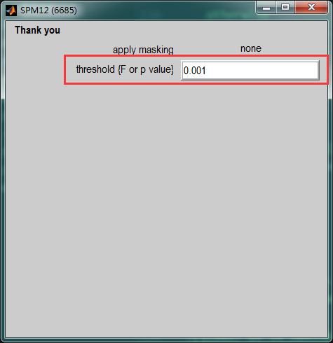
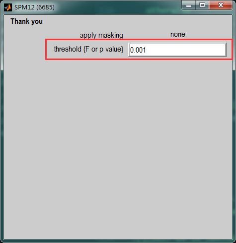

SPM是处理脑成像数据的一个综合性软件，基于matlab实现，里面有大量的函数都可以抽取出来单独使用完成某一个功能。使用其中的函数工作可以大大提高分析处理数据的便捷性，便于实现批量处理和大规模数据处理。 ### 获得窗口的句柄保存下窗口正在显示的图像
打印SPM头信息，包括时间和日期以及执行的函数名称
|
|
获得文件P的头信息
|
|
获得图像某个坐标的值
|
|
ROI的定义
SPM中Region of Interest(ROI)的定义使用的是函数spm_ROI.m,在SPM工具包中查找该名称即可找到它。 SPM中的函数默认都是通过交互的方式获得需要的参数的，类似这样的形式，spm_input('VOI definition...','!+1','b',def,[],1);，当我们需要批量处理的时候，只需要找到相关的参数，注释掉spm_input...，以传入参数替代即可。例如，假如我们想要修改spm_ROI.m使它能够根据输入的MNI坐标定义一个球形的ROI,可以这样修改： 1. 找到下面这段代码：
其中最后一条语句xY.def = spm_input('VOI definition...','!+1','b',def,[],1);是定义需要什么类型的ROI的，原来的代码里面需要用户输入，这里我们把这句话注视掉，用xY.def = input_xyz;代替；这里需要注意的是，input_xyz是3行1列的列向量，表示MNI坐标。当不知道数据的格式的时候，最好在matlab命令窗口执行修改之前的spm_input(),查看返回的是什么类型的数据。 2. 然后找到下面的代码：
这段代码是当上面定义了要使用球形的ROI时，球形ROI需要的一些参数。可以揽到，这里也是用交互的方式输入的参数，这里我们修改成传入参数的形式。 xY.xyz = input_xyz; xY.spec = input_radius;
该函数原来的调用方式是[xY, XYZmm, j] = spm_ROI(xY, XYZmm),由于我们新加入了传入参数，所以我们修改原来的函数为下面这样的形式：[xY, XYZmm, j] = spm_ROI_extend(xY, XYZmm,input_def,input_xyz,input_radius), 最后，最好把新加入的参数的含义写在下面的注释中，这样就可以使用help spm_ROI查看到该函数的使用方法。另外，自己改写的函数最好换一个名字。 一个完整的例子：
根据SPM.mat获得SPM，xSPM等结构数据
Compute a specified and thresholded SPM following estimation 
 
  实现上面图形界面所定义的操作，选择一个Contrast, 定义一个P值的大小，得到相关的图像结构信息，SPM中的函数是
实现上面图形界面所定义的操作，选择一个Contrast, 定义一个P值的大小，得到相关的图像结构信息，SPM中的函数是spm_getSPM, 函数调用的原型是[SPM,xSPM] = spm_getSPM(varargin), 它的主要作用是通过SPM.mat文件获得SPM,xSPM等结构，这两种结构在后在许多方法中作为输入参数。
SPM中Result面板中对应的函数
 想实现这个面板中的一些操作功能，可以查看对应的函数
想实现这个面板中的一些操作功能，可以查看对应的函数spm_result_ui;
抽取时间序列函数
在结果面板中抽取时间序列的操作主要涉及到两个函数，spm_regions和spm_ROI;最核心的定义ROI的代码在spm_ROI中。 附上一个可以根据输入的坐标抽取球形VOI的修改版代码：
|
|
调用上面两个函数的实现创建VOI的功能：